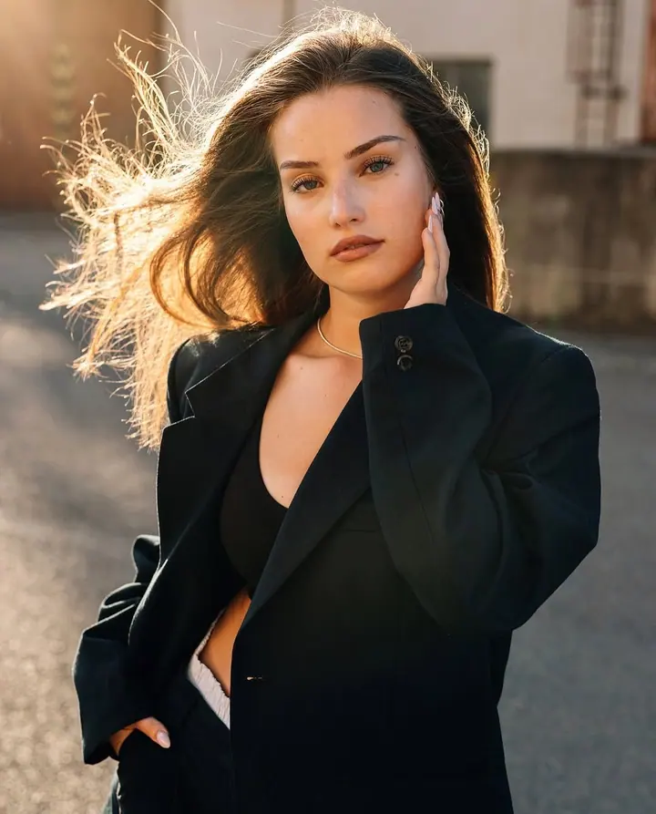
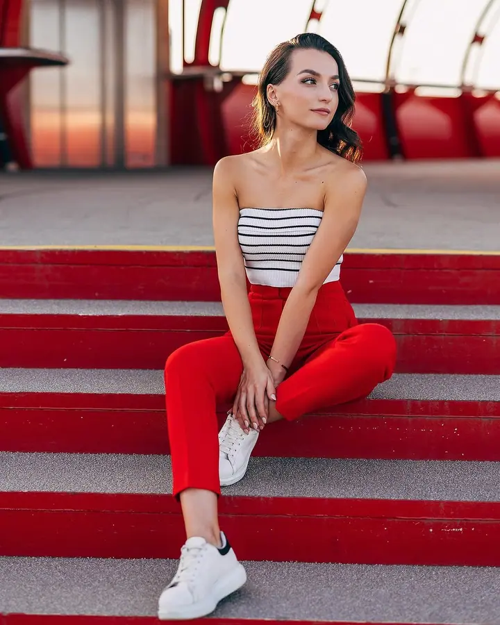
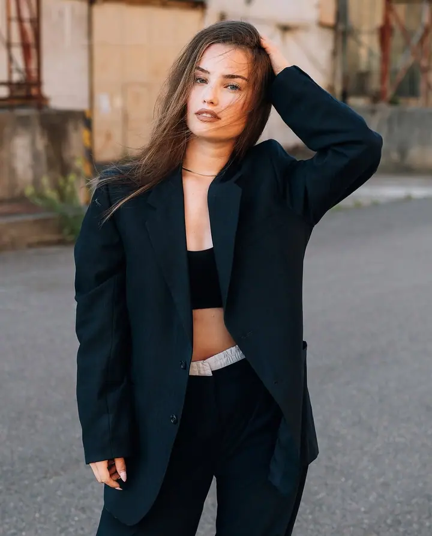
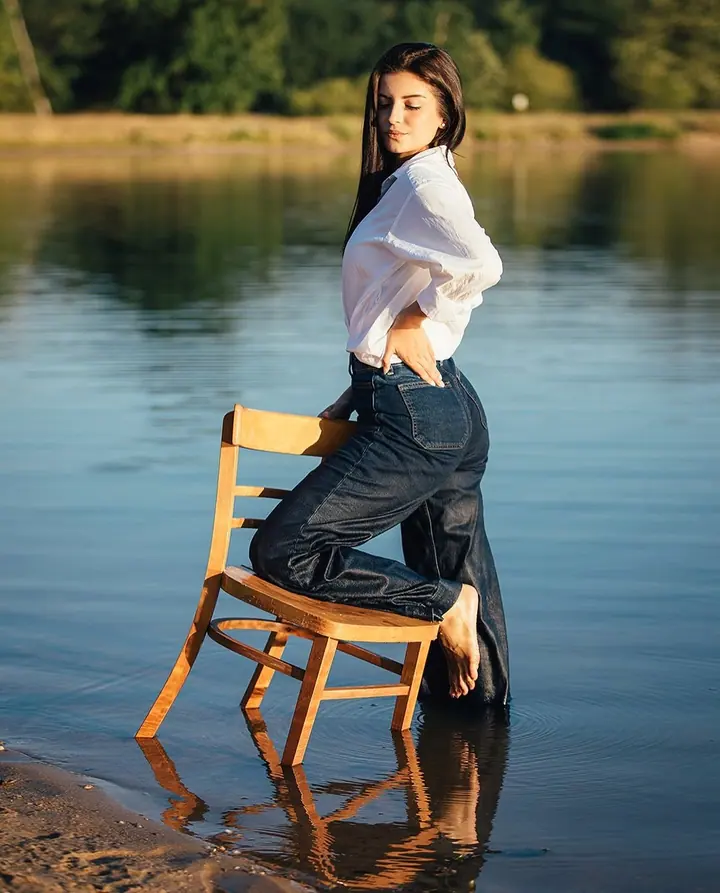
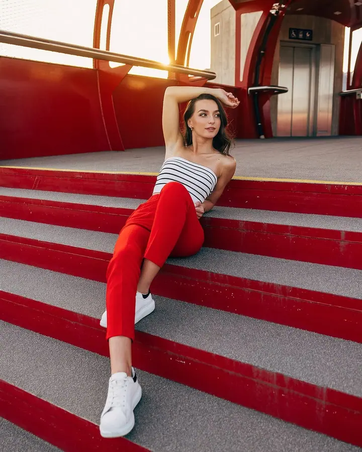
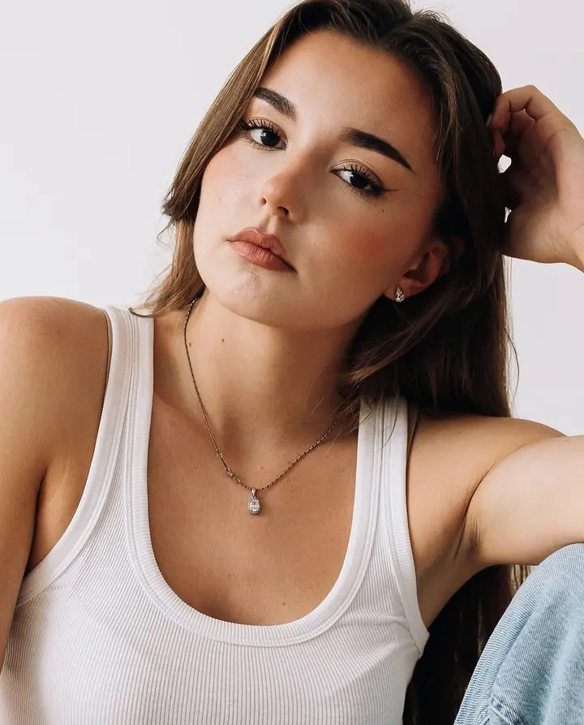
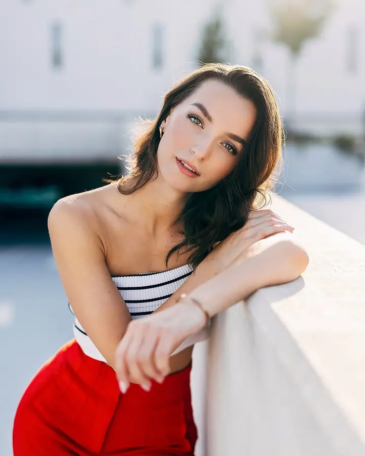
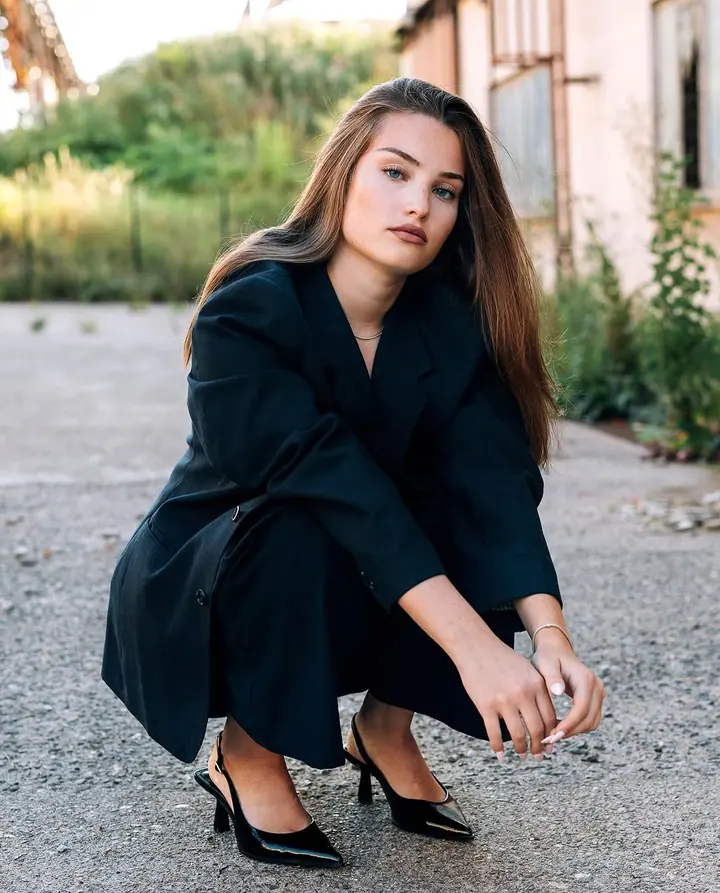
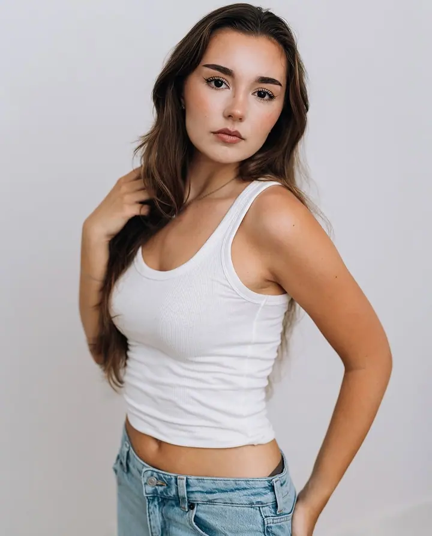

01 / 04
Portréty a glamour
Portréty v ateliéru i venku, v ulicích, u vody nebo v industriálních kulisách. Pomůžu vám s pózováním, abyste se před objektivem cítili dobře.
Zeptat se na termín→








Fotograf z Pardubic pro lidi i firmy
Zeptat se na termín →(01) Ahoj
Jmenuji se Tomáš Karlík a jsem fotograf na volné noze z Pardubic . Fotím svatby, plesy a firemní akce, ale stejně rád i portréty a glamour . Za focením jezdím po celé republice i do zahraničí .
4 995lidí sleduje mou práci na Instagramu
507příspěvků s fotkami a příběhy
(02) Co fotím
01 / 04
Portréty v ateliéru i venku, v ulicích, u vody nebo v industriálních kulisách. Pomůžu vám s pózováním, abyste se před objektivem cítili dobře.
Zeptat se na termín→Dále nabízím
Nabízím celodenní focení, půl dne nebo jen obřad a párové fotky. Zábavu můžete doplnit fotokoutkem s okamžitým tiskem, takže hosté odejdou s památkou a vám zůstanou fotky do fotoknihy.
↗Fotím plesy, maturitní plesy, večírky a další akce, často ve spolupráci s eventovými a produkčními agenturami. Na přání přivezu i fotokoutek.
↗Fotodokumentace výrobních postupů, business portréty, reklamní a propagační fotky na tiskoviny a weby. Rád nafotím i váš firemní večírek nebo výroční akci.
↗(04) Postup
Od první zprávy po hotovou galerii.
Krok 1 z 4
Napište mi přes formulář, e-mail nebo zavolejte. Stačí datum, místo a o jaké focení jde.
Krok 2 z 4
Všechno spolu osobně probereme: rozsah focení, harmonogram, styl fotek a případně fotokoutek.
Krok 3 z 4
Přijedu včas a s profesionální technikou Canon. Přizpůsobím se programu akce i vašim přáním.
Krok 4 z 4
Fotky pečlivě vyberu a upravím. Dostanete je v termínu, na kterém se domluvíme.
Spokojenost klienta je u mě na prvním místě
(05) Za objektivem
Jmenuji se Tomáš Karlík a fotím na volné noze. Mám za sebou svatby, plesy, společenské akce, reportáže, produktové fotky, portréty, glamour, realitní fotoprezentace i promo fotky pro firmy. Bydlím v Pardubicích a nejčastěji fotím tady, ale vyrazím kamkoli po České republice i do zahraničí.
Spolupracuji s eventovými a produkčními agenturami, realitními kancelářemi a školami. Nezáleží na tom, jestli jste agentura, velká nebo malá firma, podnikatel, nebo prostě chcete hezké fotky pro sebe. Jsem tu pro všechny.
Fotím na Canon R5 a sleduji nové trendy. Fotografování mě naplňuje a každé zakázky si vážím. Moje motto je jednoduché: spokojenost klienta je na prvním místě. A domluvené termíny dodržuji vždycky.
Tomáš
Tomáš Karlík · Fotograf svateb, plesů, firem a portrétů
Celodenní focení, půl dne, nebo jen obřad a párové fotky. Vyberete si podle toho, co od fotek čekáte.
Koutek, kde se hosté vyfotí a fotku si hned odnesou vytištěnou. Hodí se na svatby, plesy i firemní večírky a fotky můžete použít i do fotoknihy.
Ano. Z Pardubic vyrážím po celé České republice a jezdím fotit i do zahraničí.
Fotodokumentace výroby, business portréty, reklamní a propagační fotky na weby a tiskoviny a také firemní večírky a výroční akce.
(07) Kontakt
Napište pár vět o tom, co si představujete, a termín, který se vám hodí.
info@tomaskarlik.com